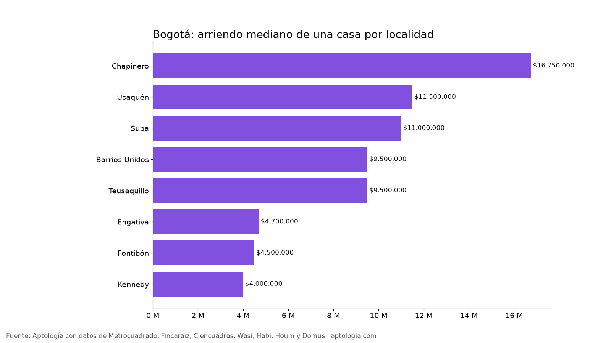

Casas en arriendo en Bogotá: precio por localidad y comparación con apartamentos (octubre 2026)
Estudio con datos abiertos (CC BY 4.0). Versión original: https://www.aptologia.com/estudios/casas-en-arriendo-bogota-2026
Arrendar una casa en Bogotá cuesta en la mediana $10.000.000 al mes, con 327 m²; por metro cuadrado ($30.799) sale 38,4 % más barata que un apartamento ($50.000). Una casa de 3 habitaciones pide $7.500.000 y una de 4 o más, $11.500.000.
Resumen: analizamos 2.553 casas en arriendo únicas en Bogotá.
Actualizado: 18 de octubre de 2026 (datos del 18 de octubre de 2026) · Próxima actualización: mensual.

Resumen
| Indicador | Valor |
|---|---|
| Arriendo mediano de una casa | $10.000.000 |
| Área mediana | 327 m² |
| Arriendo por m² (casa) | $30.799 |
| Arriendo por m² (apartamento) | $50.000 |
| Casa de 3 habitaciones | $7.500.000 |
| Casa de 4 o más habitaciones | $11.500.000 |
| Casas en arriendo analizadas | 2.553 |
Por localidad (30 casas o más)
| Localidad | Arriendo casa | Por m² casa | Área | Arriendo apartamento | Casas |
|---|---|---|---|---|---|
| Chapinero | $16.750.000 | $45.478 | 397 m² | $9.000.000 | 180 |
| Usaquén | $11.500.000 | $36.496 | 320 m² | $4.100.000 | 625 |
| Suba | $11.000.000 | $28.558 | 357 m² | $2.360.000 | 877 |
| Barrios Unidos | $9.500.000 | $31.088 | 286 m² | $2.767.000 | 211 |
| Teusaquillo | $9.500.000 | $27.679 | 380 m² | $2.573.352 | 192 |
| Engativá | $4.700.000 | $22.213 | 222 m² | $1.650.000 | 118 |
| Fontibón | $4.500.000 | $24.853 | 177 m² | $1.800.000 | 60 |
| Kennedy | $4.000.000 | $24.286 | 150 m² | $1.500.000 | 69 |
Cómo usarlo para decidir: la casa da más espacio por el mismo canon, útil para familias grandes o teletrabajo, pero revisa quién paga reparaciones, si tiene administración y cómo es la seguridad de la cuadra. Muchas casas de la oferta son casas en conjunto, con administración aparte.
Preguntas frecuentes
¿Cuánto cuesta arrendar una casa en Bogotá? La mediana es $10.000.000 al mes, sin administración, con datos del 18 de octubre de 2026.
¿Cuánto vale el arriendo de una casa de 3 habitaciones en Bogotá? La mediana es $7.500.000 al mes.
¿Dónde es más barato arrendar una casa en Bogotá? Entre las localidades con 30 casas o más, en Kennedy, con una mediana de $4.000.000.
Metodología
- Fuente: avisos vivos de vivienda recogidos por la ingesta de Aptología en Metrocuadrado, Fincaraíz, Ciencuadras, Wasi, Habi, Houm y Domus, del 11 al 18 de octubre de 2026. Corte: 18 de octubre de 2026.
- Depuración: un mismo inmueble publicado varias veces se cuenta una sola vez (agrupación por portal y, entre portales, por precio, área, habitaciones y coordenadas). Se descartan precios y áreas fuera de rango y, en arriendo, se resta la administración cuando el portal la incluye en el canon.
- Qué se mide: precios pedidos (publicados), no precios de cierre.
- Casa: inmueble clasificado como casa por el portal. Por localidad, solo con 30 casas o más (el estudio completo supera las 80).
- Limitaciones: son precios pedidos en portales, que pueden diferir del valor final de arriendo o venta. La cobertura es mayor en el norte de Bogotá y en estratos 4 a 6, porque ahí se concentra la oferta publicada. Los barrios y la localidad vienen de lo que escribe cada portal; cuando falta la localidad se asigna por los avisos vecinos más cercanos.
- Datos abiertos: datos.csv, licencia CC BY 4.0.
Cómo citar
Pinzón Pineda, D. M. (2026). Casas en arriendo en Bogotá: precio por localidad y comparación con apartamentos (octubre 2026). Aptología. https://www.aptologia.com/estudios/casas-en-arriendo-bogota-2026. Datos: datos.csv, licencia CC BY 4.0.